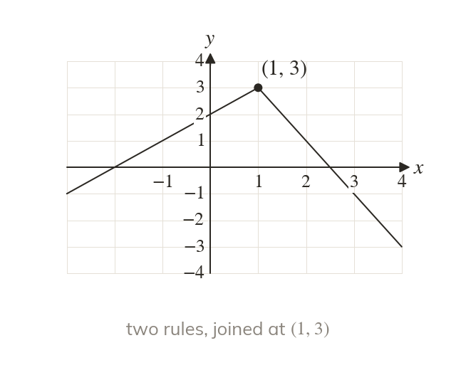
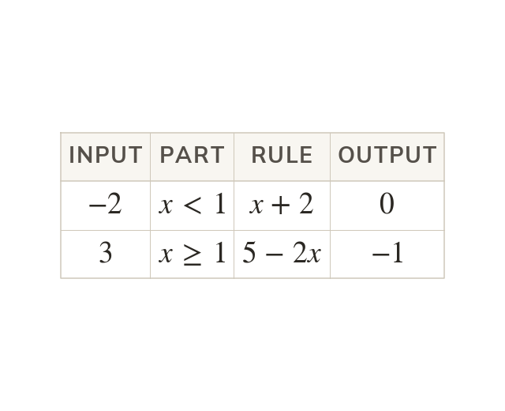
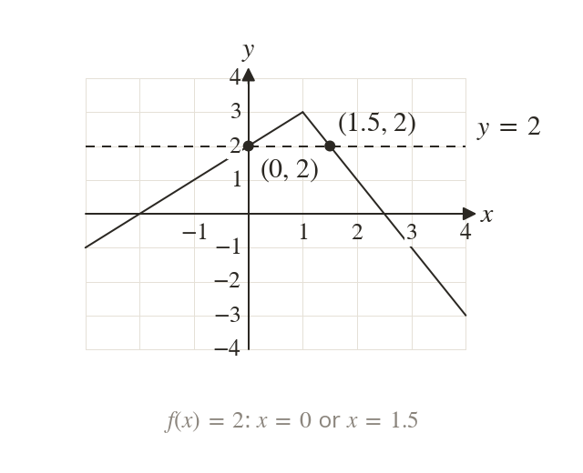
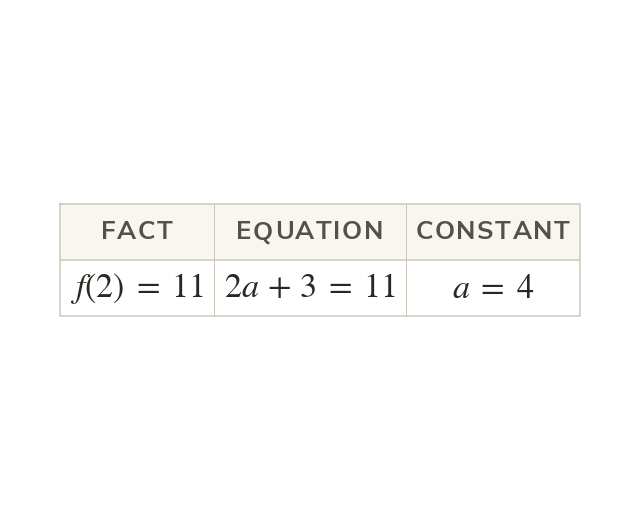
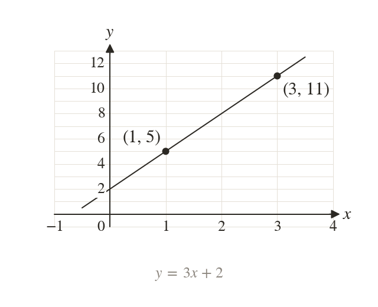
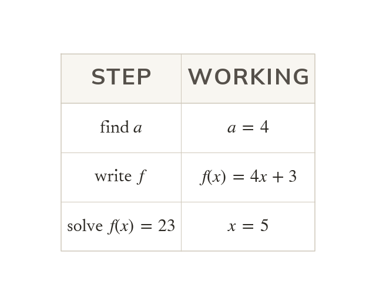

A rule for each part
for and for
Each rule draws only on its own part of the domain.
A level functions are often given in pieces, or with an unknown constant to find. Today we solve one part of the domain at a time, and fix a constant from a given value, ready for composite functions in
Work down the page at your own pace. Write every answer in your book first, then click to check it.
Read each card, then follow the worked examples one step at a time.

for and for
Each rule draws only on its own part of the domain.

To find an output, use the rule whose part holds the input. but

Solve
gives which is in and gives which is in
Both stand.
Pick an answer. If it's wrong, the feedback tells you which mistake it was.
Write the blanks in your book first, then tap each one to check.
Read each card, then follow the worked examples one step at a time.

is a whole family of lines. One fact, such as fixes since gives

with and gives and
Subtracting gives and then

Once a is found, is known, so
So gives and
Pick an answer. If it's wrong, the feedback tells you which mistake it was.
Write the blanks in your book first, then tap each one to check.
Finished? Next lesson: P2-2.3 Composite Functions.
For each skill, tap the one that is true for you today. Your Revise pages start with anything you mark Not yet.
Your ratings are saved on this device only.
Log in, then search for a code to practise that skill.